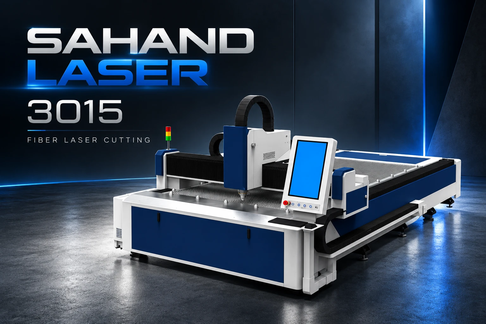

قالب فعلی با سربرگ جمعشونده، ورود نرم محتوا و حرکتهای کوتاه. بدون ویدئوی پسزمینه و با مصرف دادهٔ کم.

انتخاب دستگاه بر اساس فرایند تولید.
کنترلر، هد، سورس و سایر قطعات.
از نصب و آموزش تا تعمیر تخصصی.